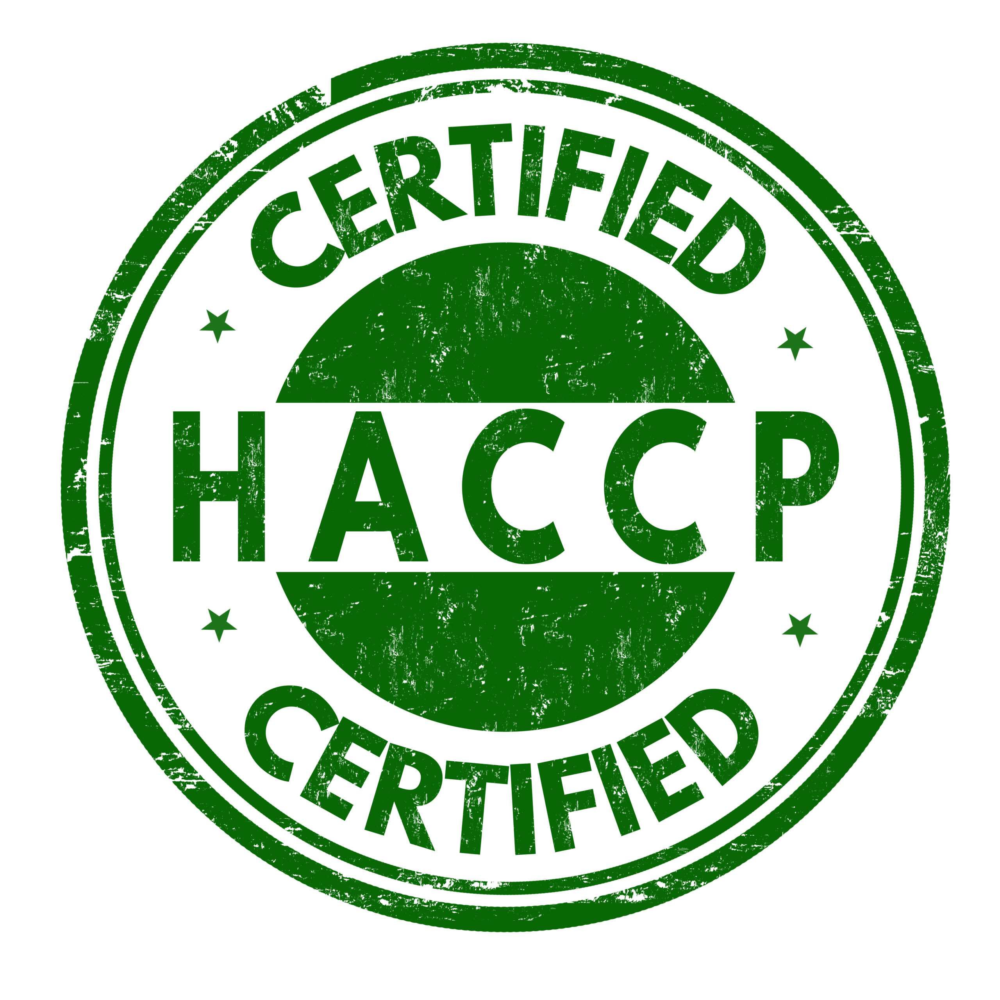
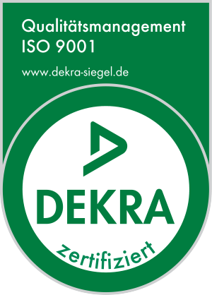
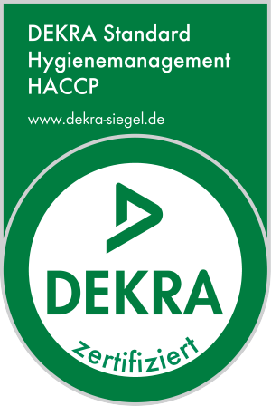

Unser Versprechen
Qualität ist
keine Frage
Für Avoria ist Qualität keine Option oder ein Zusatz sie ist das Fundament unserer gesamten Unternehmensphilosophie.
Made in Germany
Produktion ausschließlich in Deutschland nach deutschem Qualitätsstandard.
Analysezertifikate für jede Charge
Vollständige CoA-Dokumentation mit allen relevanten Prüfparametern.
Kontinuierliche Verbesserung
KVP-Prozesse und regelmäßige Schulungen halten unseren Standard hoch.





Zertifiziert
ISO 9001
HACCP
GMP
HACCP
GMP
2010
Gegründet
DE
Made in Germany